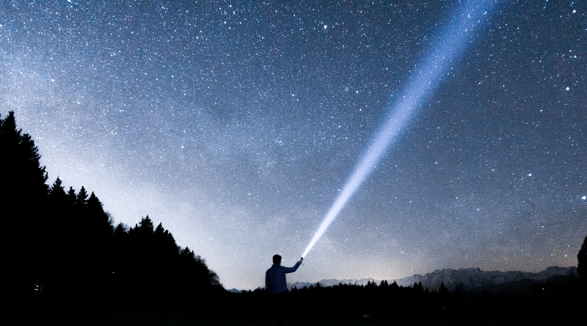

<ion-header>
    <ion-navbar color="brown">
        <ion-title>
            <ion-icon ios="ios-flash" md="md-flash"></ion-icon>
            Nkosimphile's Touch
            <ion-icon ios="ios-flash" md="md-flash"></ion-icon>

        </ion-title>
    </ion-navbar>
</ion-header>
<ion-content>
    <div class="myIgmage">
        
    </div>
    <div style="background-color: burlywood">
        <ion-grid>
            <ion-row>
                <ion-col>
                    <button ion-button default (click)="sOn()" color="secondary">
            <ion-icon ios="ios-bulb" md="md-bulb"></ion-icon>
        </button>
                </ion-col>
                <ion-col>
                    <button ion-button default (click)="sOff()" color="light">
            <ion-icon ios="ios-bulb" md="ios-bulb"></ion-icon>
        </button>
                </ion-col>
                <ion-col>
                    <button ion-button default (click)="sCamera()">
        <ion-icon ios="ios-camera" md="md-camera" ></ion-icon>
        </button>
                </ion-col>
            </ion-row>
        </ion-grid>
    </div>

</ion-content>